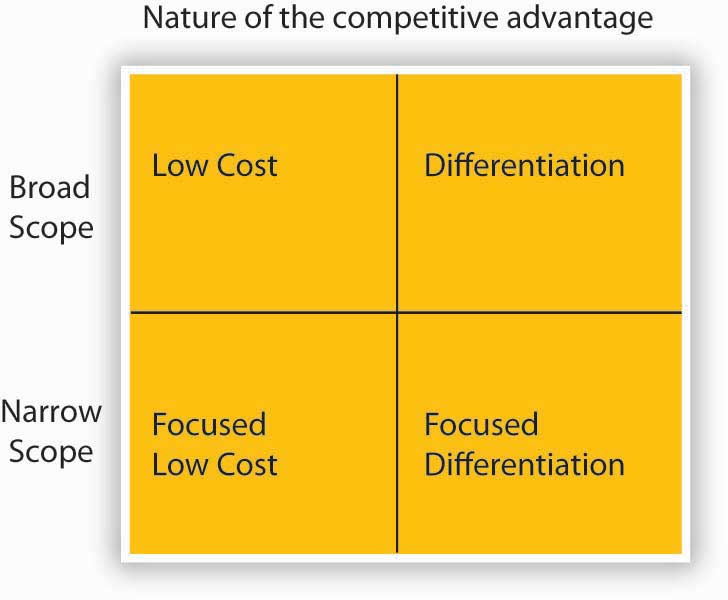

Figure 5.4 Unnamed Publisher Cofounder, Jeff Shelstad
Source: Used by permission from Unnamed Publisher Inc.
Two textbook publishing industry veterans, Jeff Shelstad and Eric Frank, started Unnamed Publisher, a privately held company, in 2007 to be a new and disruptive model for the college textbook market. Traditional business textbook publishers carry a portfolio of 5 to 10 titles per subject and charge premium prices for new textbooks, an average of $1,000 in textbooks for a college student’s first year, according to a recent General Accounting Office (GAO) report. FWK’s strategy aims to turn the traditional model on its head by providing online textbook access free to students (http://www.gone.2012books.lardbucket.org). FWK earns revenues by selling students the digital textbooks in alternate formats, print and audio initially, and also by selling highly efficient and mobile study aids. Despite the fact that professors have rated the academic quality of FWK textbooks as equal to or higher than that of textbooks from traditional publishers, the cost to students is a fraction of current market prices due to the efficiencies of the FWK business model. Moreover, with FWK’s open-source platform, instructors who adopt FWK books for their classes are able to pick and choose the material provided to their students, even if it is from earlier versions of textbooks that have since been revised.
Shelstad and Frank founded FWK because they believed that big publishers would continue to experiment and innovate, and enjoy the advantages of scale, capital, content, and brand. But the FWK founders also believed that the pace and nature of change by the big publishers of the textbook industry would remain modest and marginal, held back by an inflexible go-to market strategy, with a reflexive (and shortsighted) exercise of pricing power, outdated business models, intransigent channel partners, existing contracts, and a fear of price cannibalization, as well as the traditional culture and organizational barriers.
To seize this perceived market opportunity, FWK designed a strategy based on publishing textbooks around the three main pillars of books that are (1) free, (2) open, and (3) authored by highly respected authors. Ultimately students (or parents) pay for books. Between a publisher and the student is a gatekeeper—the instructor. The first step to revenue is to convince the gatekeeper to assign (“adopt”) an FWK textbook instead of other choices. Only then does FWK establish a relationship with the gatekeeper’s students and earn the opportunity to monetize those relationships through the sale of print books, study aids, user-generated content, and corporate sponsorship. FWK’s strategy, therefore, aims to provide a compelling value proposition to instructors to maximize adoptions and, thus, student relationships.
How is FWK’s strategy working so far? Through the start of 2010, the FWK strategy has proven effective. New customers and books come online daily and the growth trends are positive. Its first term (fall of 2009), FWK had 40,000 students using its textbooks. This has continued to rise. Several new projects are under way in international business, entrepreneurship, legal environment, and mathematical economics. Media attention to the fledgling FWK has generally been favorable. Social media experts also gave the company accolades. For example, Chris Anderson devoted a page to the FWK business model in his bestselling book Free. Moreover, early user reviews of the product were also very positive. For instance, an instructor who adopted Principles of Management noted, “I highly recommend this book as a primary textbook for…business majors. The overall context is quite appropriate and the search capability within the context is useful. I have been quite impressed [with] how they have highlighted the key areas.” At the same time, opportunities to improve the Web interface still existed, with the same reviewer noting, “The navigation could be a bit more user friendly, however.” FWK uses user input like this to better adjust the strategy and delivery of its model. This type of feedback led the FWK design squad to improve its custom Web interface, so that instructors can more easily change the book. Only time will tell if the $11 million invested in FWK by 2010 will result in the establishment of a new titan in textbook publishing or will be an entrepreneurial miss.
Case written by [citation redacted per publisher request]. Based on information from United States Government Accountability Office. (2005, July). College textbooks: Enhanced offering appear to drive recent price increases (GAO-05-806). Retrieved April 22, 2010, from http://www.gao.gov/cgi-bin/getrpt?GAO-05-806; Unnamed Publisher Web site: http://www.gone.2012books.lardbucket.org; Community College Open Textbook Collaborative. (2009). Business reviews. Retrieved April 22, 2010, from http://www.collegeopentextbooks.org/reviews/business.html; Personal interviews with Jeff Shelstad and Eric Frank.
Figure 5.6
Source: Porter, M. E. (1980). Competitive Strategy. New York: Free Press.